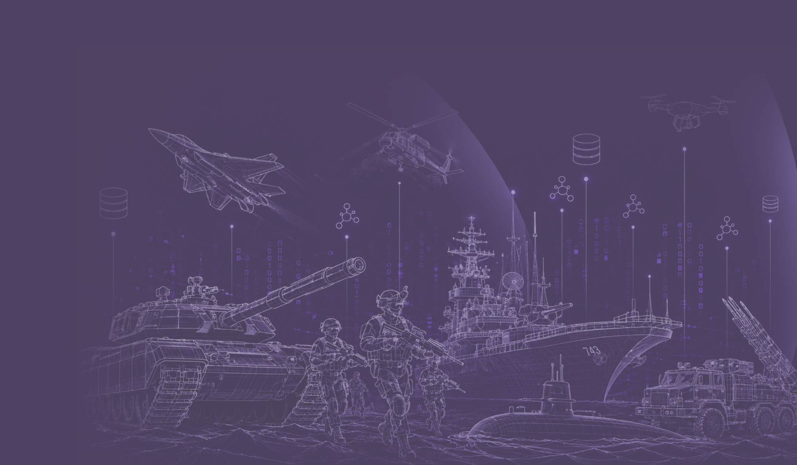
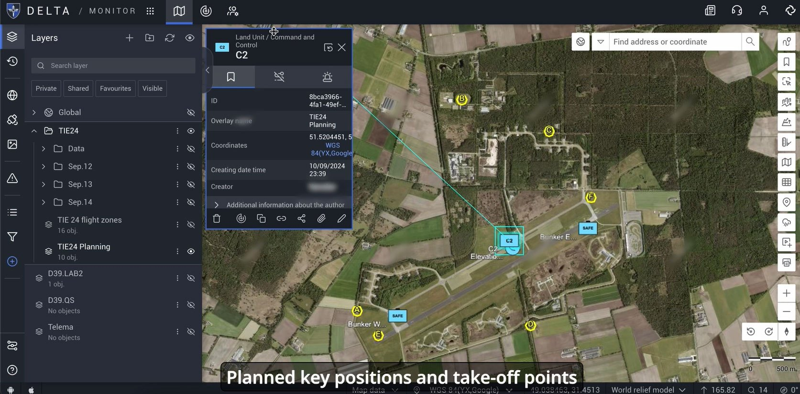
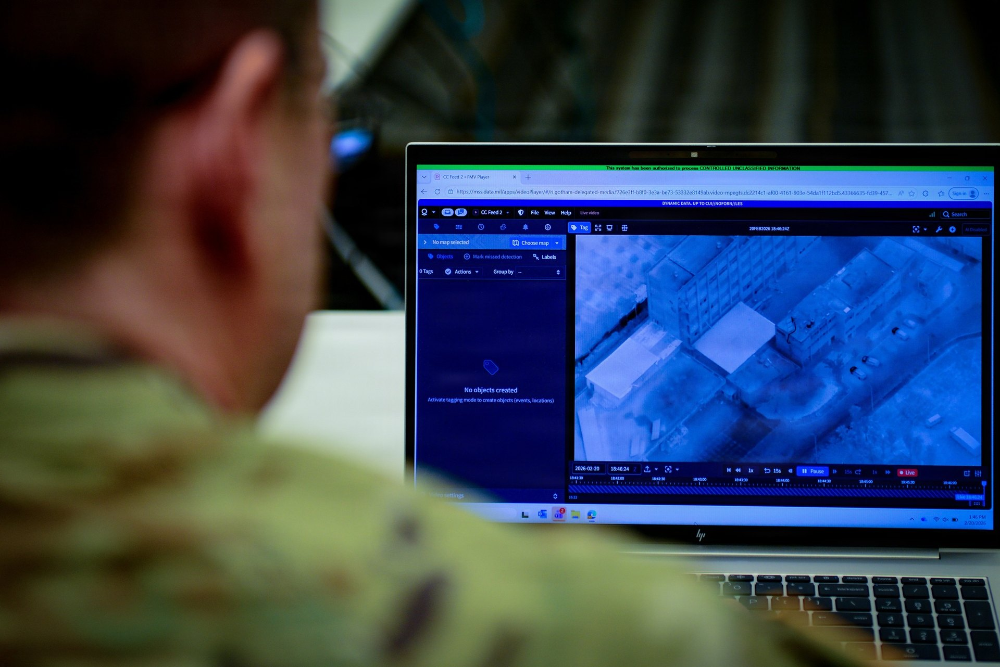
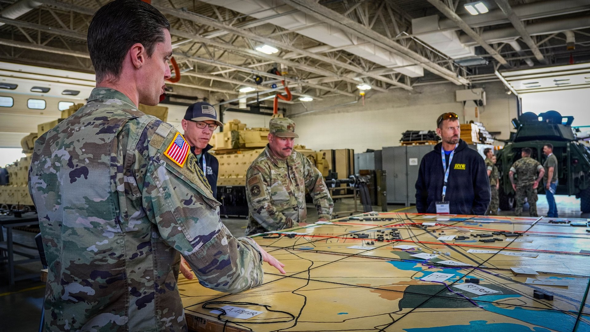
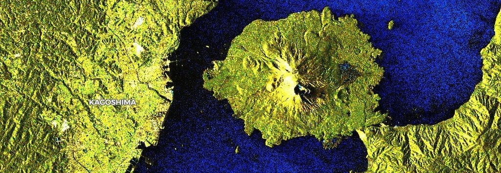

모델은 평준화됐다,
격차는 데이터 운영
국방 AI-Ready 실행 전략
Agenda
Chapter 1.
국방정보분야에 적용 가능한 AI 첨단기술 개요
Chapter 2.
해외 국방 AI 실전 도입 사례
Chapter 3.
기밀·민감 군사정보를 AI 학습에 쓰는 기술
Chapter 4.
폐쇄망에서 외부 AI와 OSINT를 활용하는 기술
Chapter 5.
실제 AI 활용 사례 및 시연 · 합성데이터·OSINT·공군 크랙 탐지
AI-Ready Data를
만드는 기업
Chief Executive Officer
배호
Current Position
개인정보위원회 위원
정보처리학회 위원
이화여대 인공지능대학 사이버보안학과 교수
인공지능대학 부학장
사이버보안 학과장
Education
유니버시티 칼리지 런던 (영국)
컴퓨터과학 학사 / 정보 보안 석사
서울대 '인공지능보안' 공학박사
Research & Expertise
AI 보안 / 차분 프라이버시 / 합성데이터
LLM 개인정보 보호 연구
학문적 깊이와 산업적 실용성을 잇는 융합 연구를 통해,
안전하고 AI가 바로 학습할 수 있는 데이터(AI-Ready Data)로
기업과 기관의 AI 혁신을 가속화.
실제 프로젝트 및 사례
금융 / 의료 / 공공 분야
50+
주요 수상 내역
장관상 4건 포함 총 10회 이상 수상
10+
Copyright 2026 CUBIG. All Rights Reserved.
데이터 주권을 지키는 국방 AI-Ready 역량
1차 발표 결론 요약 · 오늘 발표는 이 전략의 실행 방법
Summary Flow
Model → Data 전환
AI 전투력의 승패는 모델이 아니라
데이터 운영에서 갈린다
▶
도입했지만 쓸 수가 없다
4대 데이터 장벽에 가로 막혀 멈춘다
데이터가 있어도 활용할 수 없다
▶
AI-Ready Framework
원본 반출 없이 합성·캡슐화로
AI-Ready 운영 전략 수립
▶
한 번이 아닌 루틴으로
전군 허브앤스포크로 표준은 중앙이,
실행은 각 군이 맡아 전군으로 확장
AI-Ready 데이터가 갖춰지면
1. 데이터 주권 확보
핵심 전장 데이터를 외부 운영에 맡기지 않고, 우리 손으로 학습·검증·운영한다.
2. 전투력 보전
줄어드는 병력을 데이터와 AI로 메워, 결심 속도와 정확도를 지킨다.
3. 합동성 강화
전군이 같은 표준으로 데이터를 다뤄, 육·해·공 합동 결심이 빨라진다.
4. 신뢰 기반 운영
폐쇄망 안에서도 안전하게 학습하고, 지속 검증으로 현장이 믿고 쓰는 AI를 만든다.
전군 AI 전투력의 병목은 모델이 아니라 데이터 운영이다. AI-Ready 데이터가 그 병목을 푼다.
Copyright 2026 CUBIG. All Rights Reserved.

01
Chapter 1.
국방정보분야에 적용 가능한
AI 첨단기술 개요
국방정보 업무에 지금 적용 가능한 여섯 갈래
오늘 다룰 사례·기술을 여섯 갈래로 정리한 지도
01
영상 · 이미지 AI
위성·SAR 영상 객체 탐지부터 활주로 크랙·장비 결함 판독까지, 사람이 반복하던 판독 업무를 AI가 대체
02
OSINT AI
뉴스·SNS·영상 등 공개출처를 실시간 수집해 정세·위협 징후 추적 · 인물·장비 식별까지 연결
03
사이버 보안 AI
관제 로그의 이상 징후 탐지와 위협 인텔리전스 분석 자동화 · 관건은 학습할 로그 데이터 확보
04
생성형 AI (문서 · 보고서)
보고서 요약 · 작전문서 초안 · 문서 질의응답, 문서 작성 시간을 줄여 판단할 시간 확보
05
합성데이터 AI
실물이 드문 표적·결함 데이터, 반출이 막힌 민감 데이터를 원본 없이 학습용으로 생성 · 부족한 데이터를 채우는 갈래
06
폐쇄망 연계 AI
원문은 망 안에 둔 채 외부 AI에 질의, 모든 사용 이력은 기록 보존 · 망 분리 환경에서 외부 AI를 쓰는 통로
여섯 갈래 모두 민간에서 검증 완료 · 남은 숙제는 기술이 아니라 데이터를 학습 가능한 상태로 만드는 일
Copyright 2026 CUBIG. All Rights Reserved.
바로 쓸 수 있는 민간 AI, 모델이 다르지 않다
같은 모델, 결과를 가르는 것은 데이터 상태
바로 적용 가능한 민간 AI 역량
문서 요약
작전·정보 문서를 핵심만 뽑아 정리
영상 자동 분석
영상에서 대상을 자동으로 찾아 분류
회의록 · 보고서 정리
회의 내용을 보고서 형태로 정돈
같은 모델, 다른 데이터 → 다른 결과
↓
↓
Risky
민감정보, 원본 그대로는 사용 곤란
↓
미 국방부, 2025년 12월 전 부처 생성형 AI 플랫폼 GenAI.mil 출범 · 약 반년 만에 일일 사용자 150만 명, 용도는 보고서 초안 · 행정 · 분석
Copyright 2026 CUBIG. All Rights Reserved.
여섯 갈래가 모두 마주치는 관문, 기밀과 폐쇄망
기술은 준비 완료 · 남은 것은 기밀과 폐쇄망 두 관문
실전 교전 기록 · 적 장비 제원 · 인명 정보는 기밀 등급과 반출 통제에 묶인 데이터. AI 학습에 가장 필요한 데이터일수록 반출 곤란.
원본은 그대로 둔 채 통계 패턴만 옮긴 합성데이터로 학습 · 반출 승인 없이 학습 데이터 확보.
생성형 AI와 최신 공개정보는 인터넷망에, 군 업무 데이터는 국방망에 위치. 물리적 망 분리로 상호 활용 불가.
원문은 망 안에 두고 검증된 질의만 경계 통과 · 반입 경로와 통제 조건은 정부 지침이 이미 규정.
Copyright 2026 CUBIG. All Rights Reserved.
02
Chapter 2.
해외 국방 AI
실전 도입 사례
우크라이나 Delta : 흩어진 소스를 하나의 작전 그림으로
자동 교전이 아닌 정보 융합 · 기반은 데이터를 모으는 운영체계

Delta 전장 상황인식 화면 · 우크라이나 총리 공개 영상 캡처 (Euromaidan Press 2025.8)
72시간 → 약 2분
발견-타격 전달 주기 단축
드론 영상 · 위성사진 · 센서 · 전선 보고 · 시민 제보를 하나의 실시간 전장 지도로 융합하는 상황인식 플랫폼(2023년 2월 전군 배치). AI가 러시아군 장비를 자동 식별·분류(주당 약 12,000개)하고 사람은 검증과 결심에 집중. 민간 기업이 정부 데이터셋으로 학습하되 데이터는 정부 시스템 밖으로 나가지 않는 구조로 실현.
같은 상황판의 조건은 더 좋은 모델이 아니라, 흩어진 소스를 잇고 내보내지 않으면서 학습에 쓰는 데이터 운영체계
Copyright 2026 CUBIG. All Rights Reserved.
전장 데이터가 AI를 다시 훈련시킨다
모델은 범용, 전술 우위는 공개 모델을 자기 전장 데이터로 재훈련하는 루프에서
AI 탑재 정찰 드론 · 우크라이나 국방부 제공 (Militarnyi 2023.9)
수집
OCHI가 2022년 이후 15,000개+ 드론 팀의 전투 영상 200만 시간(228년분) 축적 (Reuters 2024.12)
↓
재훈련
"무료로 구할 수 있는 국제 오픈소스 모델"을 전선별·기종별 전장 데이터로 재훈련 (CSIS 2025.3 원문)
↓
배치
AI 드론 솔루션 수십 종이 전장 투입, 다시 데이터를 수집해 루프가 돈다 (Reuters 2024.10)
모델은 공개, 데이터는 자산. 모델은 누구나 구하지만 차이는 데이터에서 난다.
3~4배
AI 최종접근 유도 부착 시 타격 성공률 (10~20% → 70~80%)
CSIS Bondar 2025.3 · 복수 인터뷰 기반 분석
8~9대 → 1~2대
표적당 소요 드론
CSIS Bondar 2025.3
0.5% → 50%
AI 유도 드론 비율 (2024 확인분 → 2025 구매 목표)
CSIS Bondar 2025.3
질문은 "어떤 모델을 살까"가 아니라 "학습시킬 데이터를 어떻게 확보하나" · 모을 수 없는 데이터는 만드는 능력이 대체
공개된 사진만으로, 러시아군 23만 명을 식별
우크라이나 × Clearview AI · 공개출처(OSINT) 이미지와 안면인식 AI의 결합 · 규모의 원천은 데이터 접근
23만 명+
러시아 군인·관계자 식별
2023.11 기준 · Clearview·우크라 당국 발표 (TIME)
35만 회+
개전 20개월간 검색
TIME 2023.11
18개 기관 · 1,500명+
우크라이나 정부기관 공무원 사용 · 증거 수집 절차 가속, 사람은 판단에 집중 · 개전 50일간 전사자·포로 대상 검색 8,600건+ 보도
TIME 2023.11.14 · Washington Post 2022.4.15
OSINT 융합의 성패를 가른 것도 데이터 접근과 축적 · 민감한 인적 정보일수록 어떤 데이터를 어떤 경계 안에서 쓸지의 운영 기준이 기술보다 우선
Copyright 2026 CUBIG. All Rights Reserved.
미국-이란 국면 : 정보분석 AI의 검증된 도입
179개 정보 소스 융합과 분석 주기 단축 · 미군이 공식 확인한 실전 운용 방식

Maven Smart System 화면으로 감시영상을 판독하는 미 주방위군 요원, 2026.2.20 (U.S. National Guard · DVIDS)
Maven, 전군 핵심 체계로
2026.3 program of record 전환 수순 · CDAO 감독 이관
Reuters 2026.3.20
179+ 소스 → 단일 그림
데이터소스 통합 · 24시간 내 표적 패키지 1,000개+
CSIS 2026.6 · Guardian 2026.3
"고급 AI 도구가 수 시간, 때로는 수일 걸리던 절차를 수초로 바꿀 수 있다"
CENTCOM 사령관 Brad Cooper (DefenseScoop 2026.3.11)
AI 융합 체계로 처리한 공습 표적 수
2026.3 미국-이란 무력 충돌(Operation Epic Fury)
1,000+
개전 첫날 타격 표적
WaPo 2026.3.1
→
6,000
개전 2주 누적
합참의장 발언 3.13
→
11,000+
3월 말 누적
WSJ 2026.3
미 중부사령부가 표적 식별·분석에 AI 융합 체계를 상시 운용 · 표적 수치는 미군 공식 발표 기준
속도는 모델이, 신뢰는 데이터 품질과 검증이 좌우 · 상용 모델을 자기 체계처럼 쓰는 군은 예외 없이 데이터 융합 체계와 승인·감사 경로를 먼저 구축
Copyright 2026 CUBIG. All Rights Reserved.
한국은 82% · 남은 상승은 SW·AI, 그 전제는 데이터
국방과학기술 최선진국 대비 82% · 일본과 세계 공동 8위 (2024 조사)
국가별 국방과학기술 수준 (미국=100 기준 · 12개국 · 2024 조사)
막대 축은 60~100 구간 확대 표시 · 출처: 국방기술진흥연구소 「2024 국가별 국방과학기술 수준조사서」(2024.12 발간 · 2025.1 공개)
① 무기체계는 이미 세계권
화포 89% 세계 4위 · 기동전투·지휘통제·탄약·방공 7위권
2024 조사 · 10대 무기체계 분야
② 남은 상승분은 SW·AI
국방 SW 상승폭 최대(+6%p → 79%) · 동인은 AI·유무인 복합체계
2024 조사 · AI 단독 평가 항목 없음
③ SW·AI의 전제는 데이터
"국방AI 구현을 위한 필수 재료가 되는 국방데이터"
국방데이터·인공지능위원회 2025.12 · KIDA 2023
2037 국가 목표 90% · 세계 6위(방사청 시행계획) · 지렛대인 SW·AI가 요구하는 것이 데이터의 축적과 운영
실질을 가르는 것은 순위표가 아니라 데이터를 모으고·잇고·학습에 쓰는 운영체계의 격차
Copyright 2026 CUBIG. All Rights Reserved.
사례가 남긴 네 가지 질문
82%와 최선진국 사이 공백은 데이터 · 오늘 발표는 이 네 질문에 대한 답
Q1
왜 AI-Ready 데이터인가
같은 모델을 쓰고도 결과가 갈린 이유는 학습할 수 있는 상태의 데이터였다. 적 장비(북한 UAV 등) 실전 데이터를 모을 원천이 제한적인 우리는, 없는 데이터를 만들어야 한다.
Q2
데이터 운영체계를 어떻게 준비하나
모으고, 잇고, 검증하는 루틴이 있어야 축적이 자산이 된다. 필요한 것은 개별 도구가 아니라 운영 구조다.
Q3
외산 모델을 우리 모델처럼 쓰려면
미군도 상용 모델을 그대로 신뢰하지 않았다. 원문은 안에 두고, 등급을 나누고, 승인·감사 경로를 깐 뒤에 썼다. 우리도 같은 구조가 필요하다.
Q4
왜 AI 연계체계인가
AI 기본법(제21311호 기준)은 제4조 제2항에서 국방 전용 AI(대통령령 지정)를 적용 제외한다. 일반법 밖에 있는 국방 AI는 데이터 등급·검증·감사를 갖춘 연계체계를 자체로 세워야 한다.
네 질문의 답은 같은 방향 · 더 큰 모델이 아니라, 데이터를 만들고 잇고 다스리는 일
Copyright 2026 CUBIG. All Rights Reserved.
03
Chapter 3.
기밀·민감 군사정보를
AI 학습에 쓰는 기술
기밀 원문을 그대로 학습시키면 세 위험이 함께 열린다
유출 · 법적 책임 · 모델 역추출
유출
외부 모델 경로와 로그를 타고 원문 유출 · 한 번 나가면 회수 불가.
법적 책임
AI 기본법 제4조 제2항은 국방 전용 AI를 적용 대상에서 제외 · 반출·활용 판단은 자체 거버넌스의 몫.
모델 역추출
질의만으로 학습 데이터 원문을 복원한 연구가 이미 존재 · 큰 모델일수록 취약, 원문을 지워도 모델 안에 잔존.
닫아두면 학습 불가, 열어두면 유출 · 학습과 유지가 맞부딪히는 지점
Copyright 2026 CUBIG. All Rights Reserved.
원본 반출 없이 학습하는 방법 : 합성데이터와 차등 프라이버시
원본 미반출 · 통계 신호만 재현
지금까지: 원본을 밖으로
닫으면 활용 불가 상태 지속.
다른 방식: 원본은 그대로
원본 내부 잔류 · 접근 최소화
↓
분포·상관 보존한 합성데이터 생성
↓
합성데이터·검증 리포트만 이동
↓
그 데이터로 AI 학습
원본은 미반출 · 통계 패턴만 재현해 이전.
차등 프라이버시: 유출 위험을 ε 숫자로 통제
위험 낮음 · 정밀도 낮음
위험 높음 · 정밀도 높음
ε
이미 실제 적용된 방식
Apple사용자 데이터 통계 수집
Google이용 패턴 분석
미국 Census Bureau인구총조사 통계 공개
제한·희소·불균형 데이터를 AI가 쓸 수 있는 데이터로 재구성 · 이것이 합성데이터 생성 역량의 정의
Copyright 2026 CUBIG. All Rights Reserved.
군 적용 시나리오 : 정보·감시부터 인사·의무까지
같은 학습 방식을 군 데이터에 적용한 네 가지 시나리오
01북한 UAV · 장비 식별
실물 이미지가 희소한 적 장비
↓ 합성 생성 · 증강
장비 식별 모델 학습
02희소 표적 탐지
드물게 관측되는 표적·도발·침투 케이스
↓ 케이스 증강
탐지 모델의 사각 축소

03작전 문서 · 보고서 AI
기밀 원문은 반출 불가
↓ 구조·패턴만 합성
요약·질의응답 모델 학습

04위성 / SAR 판독
부족한 실데이터
↓ 합성 SAR·RGB 보강
군용 표적탐지 연구로 검증된 접근
업무 운영에서도
인사 · 병력 데이터 분석
작전 · 훈련·시뮬레이션 데이터
의무 · 장병 건강 데이터
민감해서 못 쓰던 데이터도 같은 방식으로 학습 가능
이미지: 미 국방부 DVIDS(Public Domain) · Contains modified Copernicus Sentinel data (2020)
Copyright 2026 CUBIG. All Rights Reserved.
국가유산청 실증 : 수집 87장이 학습 자산 1,200장으로
국가유산 AI 디지털 기술 활용 연구(2025.12 완료보고) · 이미지 15.6만 건 수집 사업 중 저수량 유산 합성 증강 실증
01
저수량 · 민감정보의 이중 제약
경복궁 주요 유산 12곳의 수집 이미지는 총 87장 · 장면 곳곳에 관람객 등 개인정보 포함
02
합성 증강
식별 객체는 합성으로 처리(차등정보보호), 배경·계절을 바꾼 새 장면 생성 · 87장 → 1,113장 증강
03
품질 검증
합성 증강 후 종합지표 0.98~0.99 · 원본만 활용한 0.80~0.96보다 높음 · 한국인공지능인증센터 합성데이터 품질 인증 기준 지표 평가
적게 모아도, 민감해도 합성 증강으로 학습 자산이 된다 · 같은 원리가 희소한 군 이미지 데이터로 연결
Copyright 2026 CUBIG. All Rights Reserved.
04
Chapter 4.
폐쇄망에서 외부 AI와
OSINT를 활용하는 기술
안에선 차단되고, 밖은 못 들인다
실무를 막는 두 갈래 병목 · 해법은 망 등급별 연계체계
내부망(폐쇄망)
작전 DB
기밀 문서
폐쇄망 LLM(GeDAI)
병목 ① 공개정보가 차단된다
정보분석 · OSINT가 최신 공개출처에 접근 곤란 · 매일 갱신되는 밖의 자료가 유입 불가
병목 ② 폐쇄망 AI가 갇혀 있다
폐쇄망 LLM(GeDAI)은 외부와 단절돼 개선 정체 · 밖의 발전을 들여올 경로 부재
해외 해법 · 미군은 망 등급별 연계체계로 해소DefenseScoop 2026.6 · 2026.1 / Reuters 2026.2
비기밀
GenAI.mil 전 부처 확산
일일 150만 사용
CUI
육군 CamoGPT 운용
민감 등급 전용
기밀망
별도 계약 · 인증 경로
상용 모델 통제 반입
폐쇄망이라서 못 쓰는 것이 아니라 등급별 연계체계가 있어야 사용 가능
Copyright 2026 CUBIG. All Rights Reserved.
AI 연계체계 접근 방법 : 정보 등급별 구분과 반입 경로
원본은 밖에 둔 채, 검증을 거친 정보만 들어온다 · 네 경로 모두 현행 지침에 근거
획일적 물리 망분리는 폐기 · 이제는 등급 기반 차등 통제
제40조(내부망ㆍ인터넷망 분리) 삭제 〈2026.5.1.〉
① 정보 등급
자료를 세 등급으로 구분 · 등급이 다룰 수 있는 범위를 정한다
C · 기밀 (Classified)
인터넷과 분리된 별도 시스템에서만 처리
제66조 제1항 · N2SF C등급 통제
S · 민감 (Sensitive)
등급 간 전송은 CDS 경유 시에만 허용
N2SF 가이드라인 · 전송 CDS
O · 공개 (Open)
인터넷 직접 통신 허용 · OSINT 수집 단말을 O등급으로 운용하면 접속이 열린다
제39조의5 제3항
② 반입 경로
공개정보를 안으로 들여오는 네 가지 길 · O등급에서 수집한 자료가 이 길로 들어온다
화면을 픽셀로만 중계 열람 · 파일은 안 넘어오고 원본은 밖에 남는다
N2SF 참고 제3절 · 접근 CDS
나 · 전송 CDS 양방향 + CDR
정제 사본만
무해화(CDR) 거친 정제 사본만 반입 · AI 학습용 공개 데이터셋이 이 길로
N2SF 참고 제3절 · 전송 CDS 양방향
물리적으로 한 방향만 허용 · 유출과 위협 유입을 원천 분리
N2SF 참고 제3절 · 전송 CDS 단방향
질의·응답이 인증·통제 · 필터링 · 이력 기록을 거침 · 원문 미반출 설계가 조건
N2SF 부록2 모델2 ③·⑥ · 초거대 AI 가이드라인 2.0
네 경로의 원리는 하나 · 원본은 그 자리에, 필요한 정보만 경계를 넘는다.
Copyright 2026 CUBIG. All Rights Reserved.
N2SF 모델 2의 AI 연계체계
N2SF 11가지 보안 모델 중 모델 2 = 업무환경에서 외부 생성형 AI를 활용하는 표준
S 등급
내부망 업무 단말
보고서 · 회의록
작전 · 정비 기록
AI 연계체계 · 경계 계층
인증 서버
부대 · 기관 계정 연동
비인가 접근 차단
권한 분리 · 관리
콘텐츠 통제
기밀 요소 자동 식별
대체어 치환
프롬프트 필터링
감사 로그
질의 · 응답 전량 기록
통제 이력 보관
실적 보고 자동화
응답 복원 (Restoration)
AI 응답이 돌아오면 대체어가 폐쇄망 안에서 원문 정보로 자동 복원 · 업무에 바로 사용
O 등급
외부 생성형 AI
상용 LLM
ChatGPT · Claude 등
질의
복원 후
치환 후
응답
N2SF의 「모델 2」 프레임워크로 AI를 안전하게 업무에 활용할 수 있습니다
국정원 「N2SF 보안 가이드라인 1.0」 부록2 · 모델 2(업무환경에서 생성형 AI 활용) 구성 재구성
Copyright 2026 CUBIG. All Rights Reserved.
원문은 안에, 질의만 밖으로
제도가 정한 접근 방식을 기술로 구현한 구조 · 마스킹과의 차이 비교
[표적좌표A] 대체어가 밖으로
복원된 실제 값이 안으로
내부망
작전 DB · 인사 편제 · 기밀 문서 · RAG 엔진
원문은 여기에 남는다
데이터 경계 보존 계층
민감 항목을 문맥 보존형 대체어로 치환. 사용 목적·권한 기준으로 등급을 판정하고 이력을 남긴다.
N2SF 모델2 ③ 보안등급 식별 · 제68조 제1항
외부 생성형 모델
ChatGPT · Claude · Gemini · CLOVA X
제66조 제4항 요건 충족(원문 미반출)
내부 복원
결과를 내부 매핑 계층으로 복원. 사람이 다시 맞춰야 하면 자동화가 아니다.
복원 우선 · 매핑은 환경 밖 미반출
마스킹 (*로 가리기)
복원 불가 · 일반 개인정보 도구의 한계
"*** 정찰대는 **:** 좌표 ****에서 무인기 2대를 식별"
누가 · 언제 · 어디인지 지워져 모델이 문맥을 상실 → 응답 부정확 · 가린 자리는 사람이 수동으로 되채워야 업무에 사용
vs
경계 보존 치환
구조 유지 · 내부에서 자동 복원
"[부대A] 정찰대는 [시간A] [좌표A]에서 무인기 2대를 식별"
문장 구조와 관계가 그대로 → 응답 정확 · 내부 매핑표로 실제 값 자동 복원 · 대상은 개인정보만이 아니라 조직이 정의한 민감 맥락 전체
출처: 국가 사이버보안 기본지침(2026.5.1.) 제66조·제68조, N2SF 보안 가이드라인 부록2 모델2.
Copyright 2026 CUBIG. All Rights Reserved.
민감정보가 경계를 넘는 실제 순서
치환 → 질의 → 응답 → 복원, 예시 문서 하나로 밖으로 나가는 값과 안에 남는 값을 추적
내부망 · 원문과 매핑표가 머무는 곳
외부 · 대체어만 오가는 곳
"제○○사단 정찰대는 06:00 좌표 38.○○N 127.○○E에서 무인기 2대를 식별. 가용 요격 자산은 △△기지 2식."
경계 계층이 민감 항목 4곳(부대 · 시간 · 좌표 · 기지)을 판정
"[부대A] 정찰대는 [시간A] [좌표A]에서 무인기 2대를 식별. 가용 요격 자산은 [기지B] 2식. 위 보고를 상급부대 보고 형식으로 요약하라."
문장 구조는 그대로, 민감 값 자리만 대체 · 모델이 맥락을 잃지 않음
④ 내부 복원 · 업무에 바로 사용
매핑표는 내부만
"보고 요약 · 제○○사단 정찰대, 06:00 좌표 38.○○N 127.○○E 일대 무인기 2대 식별. 대응 가능 자산 △△기지 2식 …"
대체어 ↔ 실제 값 매핑표로 자동 복원 · 질의 전 과정이 이력으로 기록(감사)
"보고 요약 · [부대A] 정찰대, [시간A] [좌표A] 일대 무인기 2대 식별. 대응 가능 자산 [기지B] 2식 …"
외부 모델 · 로그 어디에도 실제 값이 존재한 적 없음
Copyright 2026 CUBIG. All Rights Reserved.
기밀 등급 업무에 AI를 쓰는 법 :
원문은 부대 안에, 질의만 밖으로
같은 구조 위에서 열리는 세 가지 업무 · 원문 미반출 활용 시나리오
상황 보고를 상급부대 보고 형식 초안으로 자동 변환 · 앞 장 워크스루의 실사용 형태
원문 · 매핑표는 폐쇄망 안
다출처 첩보를 요약하고 보고서 초안 생성 · 판단과 서명은 분석관의 몫
대체어 질의만 경계 통과
내부 문서고에 자연어로 질의 · 검색 인덱스와 원문은 전부 폐쇄망 안
응답 복원은 내부에서
세 업무의 공통 구조는 하나 · 원문과 매핑표는 폐쇄망 안, 경계를 넘는 것은 대체어 질의뿐 · 새 체계 신설이 아니라 기존 업무 위에 경계 계층 하나를 더하는 방식
Copyright 2026 CUBIG. All Rights Reserved.
05
Chapter 5.
실제 AI 활용 사례 및 시연
합성데이터 · OSINT · 공군 크랙 탐지
공군 활주로 크랙 탐지 : 원본을 보지 않고 학습한 AI
서울 AI 허브 × 공군 오픈이노베이션 · 활주로 노면 균열 탐지 모델 개발
01
활주로 노면 크랙 5종 탐지
노면에 생기는 서로 다른 다섯 유형의 균열을 찾아내는 AI 모델 학습
02
데이터
군 활주로 촬영 원본 이미지 22,392장 · 군 시설 이미지로 반출 통제 대상
03
검증 결과
원본으로 학습한 모델 대비 정확도·재현율 0.77 / 정밀도·F1 0.72 · 원본 유추 위험은 SSIM·LPIPS 유사도로 점검
균열 사례는 실제 발생을 기다려야 확보 · 유형별 수량 불균형
군 시설 이미지라 반출 · 외부 협업 통제
확보 속도로는 탐지 모델 학습에 필요한 양을 채우기 어려움
▼
같은 유형의 균열을 새 노면 장면 위에 생성 · 위치 라벨 포함
희소한 결함 사례를 필요한 만큼 늘려 불균형 해소
탐지 모델은 원본이 아닌 합성데이터만으로 학습
제약이 곧 본질 · 원본 유추 불가형 생성으로 유출 위험을 통제하고, 탐지 모델은 합성데이터만으로 학습한 실제 수행 사례
Copyright 2026 CUBIG. All Rights Reserved.
실제 크랙 vs 합성 크랙 : 형태는 배우고, 원본은 남기지 않는다
동일 균열 유형 정성 비교 · 왼쪽이 실제, 오른쪽이 AI가 만든 이미지 · 균열 부위 확대
원본 · 실제 활주로 크랙
실제 노면의 세로 균열 · 초록 박스 = 탐지 라벨
합성 · AI가 생성한 크랙
노면 질감·명암이 다른 새 장면 위에 같은 유형의 균열 생성 · 위치 라벨 표시 포함
합성은 원본의 복사가 아니라 균열 유형의 재현 · 희소한 결함 사례를 필요한 만큼 늘려 학습
Copyright 2026 CUBIG. All Rights Reserved.
OSINT·정세 모니터링 유사 사례 : AI 여론분석 대시보드
공개 석상 시연이 어려운 국방 OSINT 대신, 같은 원리의 공공 시스템 라이브 시연
1,372건
수집 기사 누적 · 2020.2 ~ 2026.4
긍 · 부정 자동
기사별 감성·리스크 등급 판단 · 담당자 태깅
Copyright 2026 CUBIG. All Rights Reserved.
수집 → 분석 → 알림 : 모니터링 전 과정이 한 체계로
키워드 등록부터 담당자 알림까지 자동화 · 각 단계 실제 화면
01수집 · 키워드 그룹 관리
감시할 이슈를 키워드 그룹으로 등록 · 우선순위가 알림 순서를 결정
02분석 · 감성 추이와 아젠다
월별 긍·부정 적재와 부정률 추이 · 주요 아젠다 자동 태깅 · 시뮬레이션 처리 42초→24초
03알림 · 담당자 발송
매일 아침 기사 목록을 담당 조직에 자동 발송
공개정보를 실시간 수집·정량화·시뮬레이션하는 원리는 정세·위협 모니터링에 그대로 적용
Copyright 2026 CUBIG. All Rights Reserved.
데이터의 AI-Ready 상태를 진단한다 : Syntitan
데이터의 학습 가능 여부 진단부터 정비까지, 영상 시연
Syntitan 데모 영상 · 현장 재생 (영상 파일: assets/video/syntitan_demo.mp4)
Usability 사용성
Integrity 무결성
Context 맥락
Consistency 일관성
Reproducibility 재현성
Traceability 추적성
Copyright 2026 CUBIG. All Rights Reserved.
오늘의 결론 : 데이터 운영이 AI 경쟁 우위의 핵심
우리 부대는 'AI-Ready'를 어떻게 준비할 것인가
결과를 가른 것은 모델이 아니라 데이터
미국·이스라엘·우크라이나는 상용 AI를 표적 식별·정보 분석에 이미 실전 운용 · 같은 모델을 쓰고도 성과가 갈린 이유는 학습 가능한 상태의 데이터와 운영 루틴
기밀 데이터, 원본 반출 없이 학습·활용
학습은 통계 패턴만 재현하는 합성데이터로, 활용은 대체어 질의만 경계를 넘는 치환 구조로 · 유출·법적 책임·역추출 세 위험 통제
시나리오가 아니라 검증된 실적
국가유산청 수집 87장 → 학습 자산 1,200장 · 공군 활주로 크랙은 합성데이터만으로 탐지 모델 학습 · 남은 것은 우리 데이터로 반복할 루틴
Action Plan Roadmap
진단 및 Gap 분석
AI-Ready 수준 진단
데이터 장벽 식별
▶
설계 및 데이터 정렬
유스케이스 목표 설정
데이터 정렬(Alignment)
▶
운영 프레임 구축
파일럿 프로젝트 수행
운영 루틴 정착
Copyright 2026 CUBIG. All Rights Reserved.